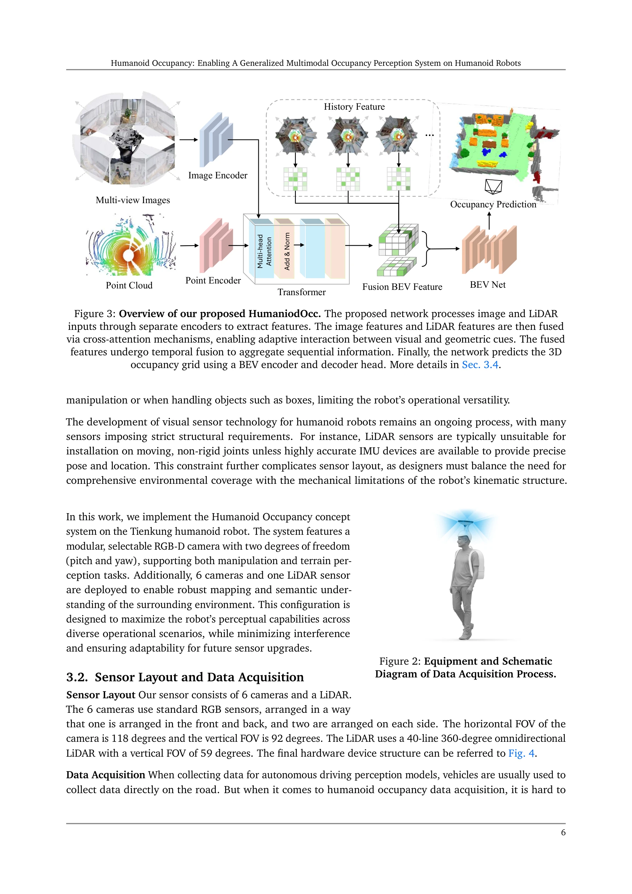
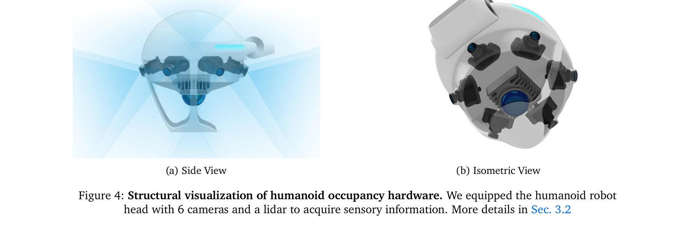

Essence

Figure 1: Schematic diagram of the Humanoid Occupancy system.
휴머노이드 로봇을 위한 일반화된 다중모달 occupancy 인식 시스템을 제시하며, 하드웨어 설계, 데이터셋 구축, 다중모달 fusion 네트워크를 통합한 완전한 환경 인식 프레임워크를 제공한다.
저자: Wei Cui, Haoyu Wang, Wenkang Qin, Yijie Guo, Gang Han, Wen Zhao, Jiahang Cao, Zhang Zhang, Jiaru Zhong, Jingkai Sun, Pihai Sun, Shuai Shi, Botuo Jiang, Jiahao Ma, Jiaxu Wang, Hao Cheng, Zhichao Liu, Yang Wang, Zheng Zhu, Guan Huang, Jian Tang, Qiang Zhang | 날짜: 2025-07-27 | URL: https://arxiv.org/abs/2507.20217
Figure 1: Schematic diagram of the Humanoid Occupancy system.
휴머노이드 로봇을 위한 일반화된 다중모달 occupancy 인식 시스템을 제시하며, 하드웨어 설계, 데이터셋 구축, 다중모달 fusion 네트워크를 통합한 완전한 환경 인식 프레임워크를 제공한다.

Figure 2: Equipment and Schematic

Figure 4: Structural visualization of humanoid occupancy hardware. We equipped the humanoid robot
총평: 본 논문은 휴머노이드 로봇의 독특한 구조적 도전과제를 해결하는 실질적이고 포괄적인 occupancy 기반 인식 시스템을 제시하며, 첫 번째 휴머노이드 로봇 특화 데이터셋 제공으로 해당 분야에 중요한 기여를 한다.